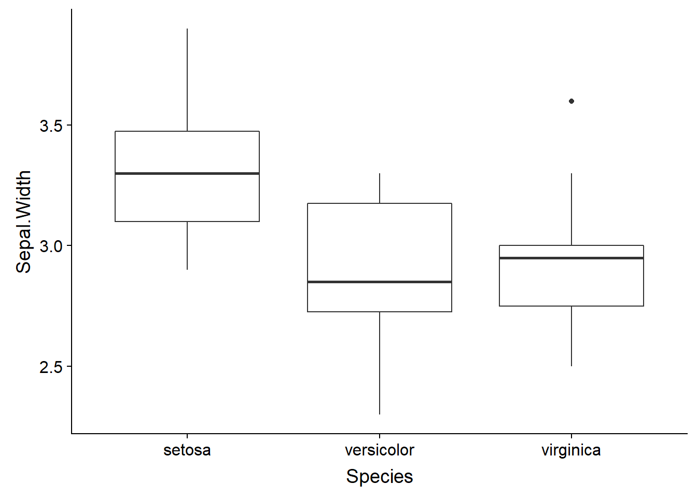
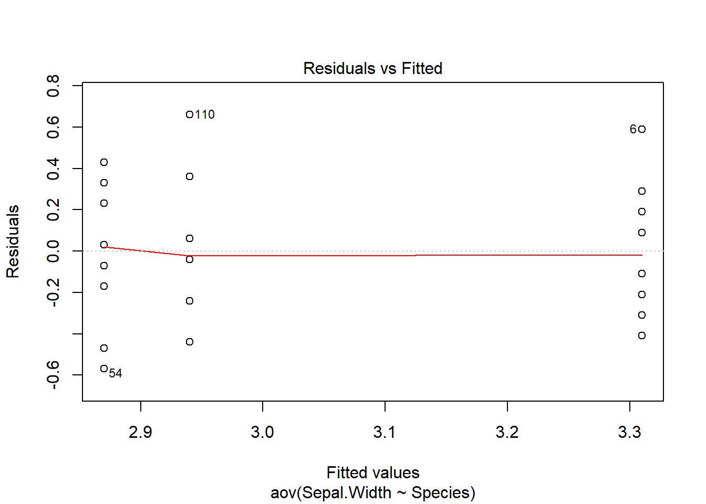
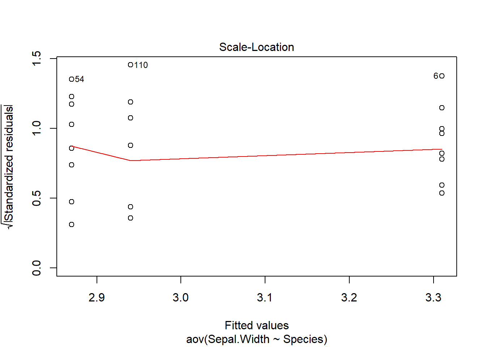
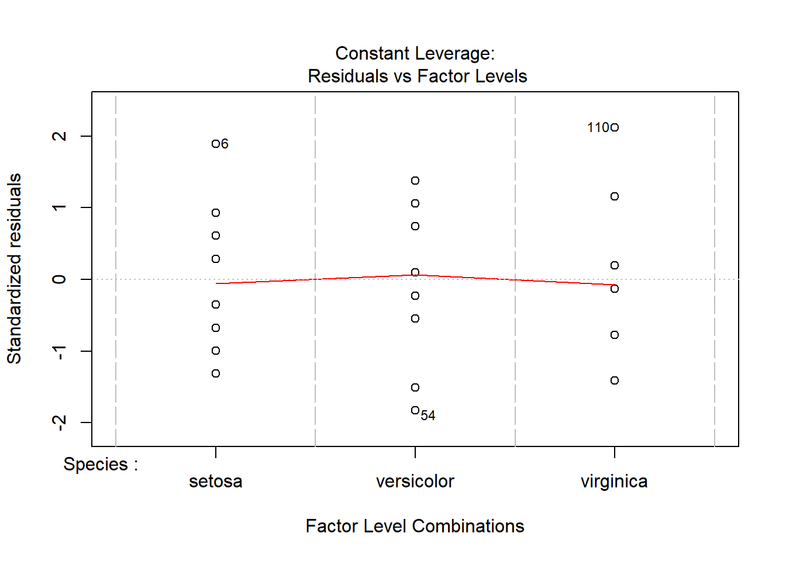
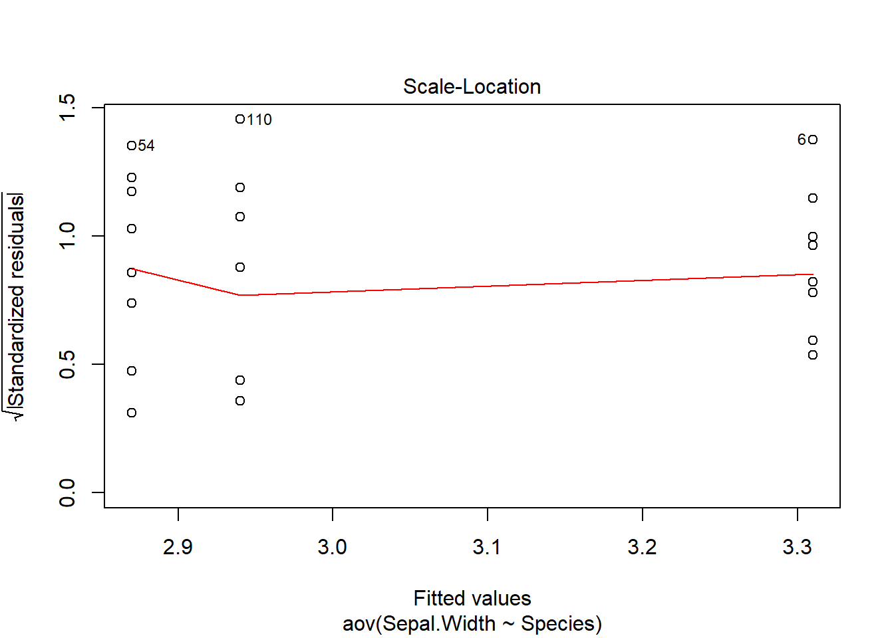
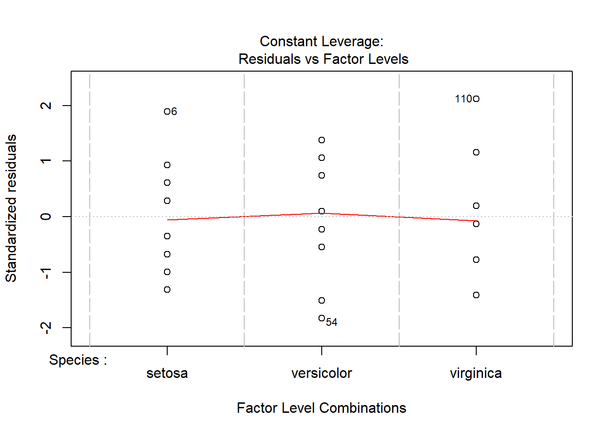
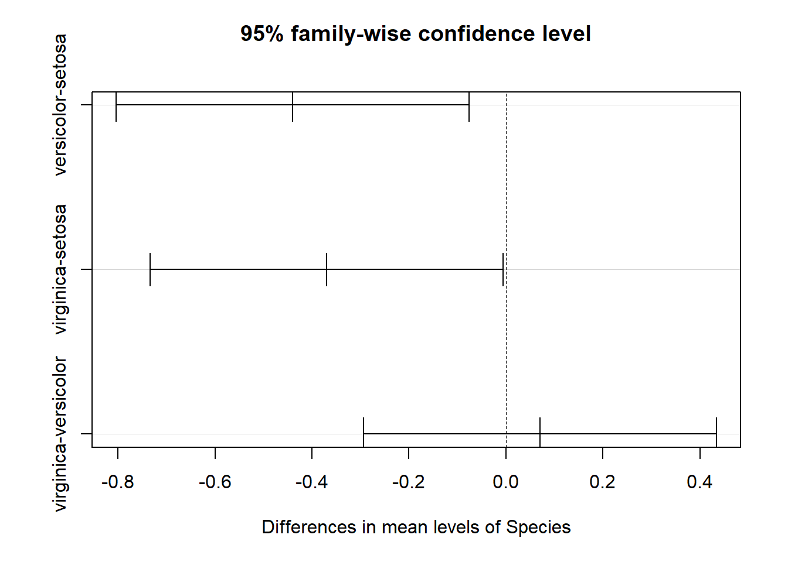

Chi-squared test and ANOVA
September 23, 2019
General plan
At the last class, we used the \(t\)-test to determine if the mean value of a variable differed between two groups. The analysis of variance (ANOVA), which we will start discussing today, makes it possible to extend this comparison to several groups.
More generally, we could say that the \(t\)-test and ANOVA deal with the effect of categorical predictors (e.g. different treatments) on a numerical response. Another test that we will use in this class is the chi-squared test, which aims to detect an association between two categorical variables.
Later this semester, we will focus on regression models. These are broader in scope because they link a response variable to categorical and numerical predictors. In particular, we will see that the \(t\)-test and ANOVA are examples of linear regression models.
| Categorical response | Numerical response | |
|---|---|---|
| Categorical predictor | Chi-squared test | \(t\)-test (2 categories) or ANOVA (more than 2 categories) |
| Categorical or numerical predictor | Logistic regression | Linear regression |
Objectives
Use the chi-squared test to compare the frequencies of a categorical variable to a reference distribution, or to test the association between two categorical variables in a contingency table.
Understand the principle of the analysis of variance and perform a one-way ANOVA.
Determine the significant differences between treatments using Tukey’s range test.
Compare the frequencies of a variable to a reference distribution
Example: To check if a die is balanced, we compile the result of 100 throws. The following table shows the number of times each number was obtained (its frequency \(f\)).
| \(i\) | \(f_i\) |
|---|---|
| 1 | 12 |
| 2 | 17 |
| 3 | 16 |
| 4 | 18 |
| 5 | 11 |
| 6 | 26 |
| Total | 100 |
Our null hypothesis is that the die is balanced, so there is an equal probability of getting each value (\(p_i\) = 1/6 for \(i\) from 1 to 6). If we multiply these probabilities by the total number of throws, we obtain the expected frequency (\(\hat{f_i}\)) for each number.
| \(i\) | \(f_i\) | \(p_i\) | \(\hat{f_i}\) |
|---|---|---|---|
| 1 | 12 | 1/6 | 16.7 |
| 2 | 17 | 1/6 | 16.7 |
| 3 | 16 | 1/6 | 16.7 |
| 4 | 18 | 1/6 | 16.7 |
| 5 | 11 | 1/6 | 16.7 |
| 6 | 26 | 1/6 | 16.7 |
| Total | 100 |
Pearson’s chi-squared test
For a variable with \(k\) categories, the value of the chi-squared (\(\chi^2\)) statistic is calculated as:
\[ \chi^2 = \sum_{i = 1}^k \frac{(f_i - \hat{f_i})^2}{\hat{f_i}} \]
The chi-squared statistic thus measures the sum of the deviations between the observed and expected frequencies (normalized by the expected value). When the \(\hat{f_i}\) for each category are large enough (typically, 5 or more), this statistic roughly follows a \(\chi^2_{k-1}\) distribution, where $k - 1 $is the number degrees of freedom.
Reminder: The degrees of freedom correspond to the number of independent data used in the calculation of a statistic. Here, the \(\chi^2\) is calculated from the deviations between observed and expected frequencies for \(k\) categories. However, since the sum of the deviations must equal 0 (because the total of \(f_i\) and \(\hat{f_i}\) is the same) there are \(k - 1\) independent deviations.
\[ \sum_{i=1}^k f_i = \sum_{i=1}^k \hat{f_i} \], thus \[\sum_{i=1}^k (f_i - \hat{f_i}) = 0\]
Here is the distribution of \(\chi^2_{k}\) for different values of \(k\):

In R, the pchisq(q, df) function gives the probability of getting a value less than or equal to \(q\) for a chi-squared distribution with \(df\) degrees of freedom. Let’s calculate this probability for our example.
# Data
x <- c(12, 17, 16, 18, 11, 26)
n <- sum(x) # total
# Theoretical probabilities
p <- rep(1/6, 6)
# Calculate chi-squared statistic
khi2 <- sum((x - n*p)^2 / (n*p))
khi2## [1] 8.6pchisq(khi2, df = 5)## [1] 0.8738776Question: What is the \(p\)-value for this test? Is it a one-sided or two-sided test?
This is a one-sided test, since if the theoretical model was a bad fit, the sum of the deviations would be larger than expected. The \(p\)-value is 1 - pchisq(chi2, df = 5), which is about 0.126.
Rather than manually calculating the statistic, we can use the chisq.test function.
chisq.test(x, p = p)##
## Chi-squared test for given probabilities
##
## data: x
## X-squared = 8.6, df = 5, p-value = 0.1261Test of association between two categorical variables
Contingency table
Often, we do not have a reference distribution for a categorical variable, but we want to check if its distribution depends on the value of another categorical variable, in other words, if the two variables are associated.
For example, suppose the number of dead and live trees of three coniferous species (ABBA: balsam fir, PIGL: white spruce, PIMA: black spruce) were counted in a plot following a spruce budworm epidemic.
# rbind creates a matrix by binding vectors as rows
survie <- rbind(c(29, 11, 12), c(31, 29, 38))
rownames(survie) <- c("dead", "alive")
colnames(survie) <- c("ABBA", "PIGL", "PIMA")
survie## ABBA PIGL PIMA
## dead 29 11 12
## alive 31 29 38This type of matrix is called a contingency table.
In our example, the two variables (survival and species) are associated if the mortality rate depends on the species. The null hypothesis represents the absence of association, that is, survival is independent of the species.
Chi-squared test for two variables
As in the previous section, we will calculate the \(\chi^2\) from the deviations between the observed (\(f_ {ij}\)) and expected (\(\hat{f_{ij}}\)) frequencies.
\[ \chi^2 = \sum_{i = 1}^r \sum_{j = 1}^c \frac{(f_{ij} - \hat{f_{ij}})^2}{\hat{f_{ij}}} \]
Here, \(r\) and \(c\) refer to the number of rows and columns in the table, respectively.
How to determine the expected frequencies \(\hat{f_{ij}}\)? Let’s first calculate the totals in each row and column, as well as the grand total.
| ABBA | PIGL | PIMA | Total | |
|---|---|---|---|---|
| dead | 29 | 11 | 12 | 52 |
| alive | 31 | 29 | 38 | 98 |
| Total | 60 | 40 | 50 | 150 |
Let \(N_i\) be the total of the row \(i\), \(N_j\) the total of the column \(j\) and \(N\) be the grand total. We estimate the probability of each category by the proportion of the grand total included in this category: \(\hat{p_i} = N_i / N\) and \(\hat{p_j} = N_j / N\).
The joint probability of two independent variables is the product of the probabilities of the variables taken separately, e.g.: (Prob. that the tree is a live fir) = (Prob. that the tree is a fir) x (Prob. that the tree is alive). Thus, the expected frequencies according to the null hypothesis are calculated as follows.
\[ \hat{f_{ij}} = N p_i p_j = \frac{N_i N_j}{N}\]
If the null hypothesis is correct, then the \(\chi^2\) statistic follows a distribution with \((r - 1) \times (c - 1)\) degrees of freedom. In our example, \(df = 2\). Indeed, since the expected frequencies are based on the totals of each row and each column, the sum of the deviations in each row and each column must be zero.
If we choose a threshold \(\alpha = 0.05\) and then apply the chisq.test function to that matrix, we get a \(p\)-value of 0.01, meaning there is a significant association between the two variables.
chisq.test(survie)##
## Pearson's Chi-squared test
##
## data: survie
## X-squared = 8.3669, df = 2, p-value = 0.01525To specify the association, we can assign the result of the test to a variable khi2 and inspect the expected frequencies (khi2$expected) and the residuals (khi2$residuals).
khi2 <- chisq.test(survie)
khi2$expected## ABBA PIGL PIMA
## dead 20.8 13.86667 17.33333
## alive 39.2 26.13333 32.66667khi2$residuals## ABBA PIGL PIMA
## dead 1.797969 -0.7698235 -1.2810252
## alive -1.309697 0.5607636 0.9331389The residuals are the standardized deviations:
\[ \frac{f_{ij} - \hat{f_{ij}}}{\sqrt{\hat{f_{ij}}}} \]
The sum of the squared values of these deviations are equal to \(\chi^2\).
How can we interpret this matrix of residuals? Since there is an excess of dead fir (positive residual), the fir mortality rate is higher than predicted by the null hypothesis, whereas it is lower than expected for both spruces.
However, the rejection of the null hypothesis (independence between mortality and species) in the table does not tell us between which species the mortality rate varies significantly. Later this semester, we will see how a logistic regression estimates the probability of a binary result (e.g., survival) based on a categorical or continuous predictor.
Notes on using the chi-squared test
The chi-squared test must always be done on the frequencies (number of observations), not on the proportions. Without knowing the size of the sample, the proportions themselves do not tell us if a deviation is significant. For example, if two categories should be in equal proportions (50% / 50%), frequencies of 60 and 40 may be a significant deviation, but not frequencies of 6 and 4.
Since the chi-squared test approximates discrete data by a continuous distribution, it becomes less accurate as the sample size decreases. The test is therefore not recommended if one of the expected frequencies (\(\hat{f_ {ij}}\)) is less than 5. In this case, we can use Fisher’s exact test (
fisher.testfunction in R), which calculates the exact probabilities of different contingency tables, assuming that the row and column totals are fixed.
tab <- matrix(c(4, 6, 8, 2), nrow = 2)
tab## [,1] [,2]
## [1,] 4 8
## [2,] 6 2chisq.test(tab)## Warning in chisq.test(tab): Chi-squared approximation may be incorrect##
## Pearson's Chi-squared test with Yates' continuity correction
##
## data: tab
## X-squared = 1.875, df = 1, p-value = 0.1709fisher.test(tab)##
## Fisher's Exact Test for Count Data
##
## data: tab
## p-value = 0.1698
## alternative hypothesis: true odds ratio is not equal to 1
## 95 percent confidence interval:
## 0.01252647 1.65925396
## sample estimates:
## odds ratio
## 0.1841181Analysis of variance (ANOVA)
Suppose we want to compare the mean of a variable between several (>2) groups. We could compare the groups in pairs with \(t\)-tests (for example, A-B, B-C, and A-C for three groups), but as we saw in the previous class, performing multiple tests increases the probability of making a type I error.
For a sample divided into several groups, the analysis of variance (ANOVA) compares the variation between observations within each group to the variation between the groups. It thus makes it possible to globally test the null hypothesis according to which observations in each group come from populations with the same mean.
As an example, let’s take the first 10 observations of each species in the iris data set included with R. Here is the distribution of the sepal widths for this sample.
iris_ech <- iris[c(1:10, 51:60, 101:110), ]
ggplot(iris_ech, aes(x = Species, y = Sepal.Width)) +
geom_boxplot()
This graph shows the variation of a numeric variable based on a categorical variable (or factor) that has three categories. A one-way ANOVA compares groups along one categorical variable.
One-Way ANOVA Model
Suppose we measure the variable \(y\) for \(l\) groups each including \(n\) observations. The difference between an observation \(k\) of the group \(i\) (\(y_ {ik}\)) and the (theoretical) mean of that group (\(\mu_i\)) is the residual \(\epsilon_{ik}\).
\[ y_{ik} = \mu_i + \epsilon_{ik} \]
In the ANOVA model, we assume that residuals follow a normal distribution with mean 0 and a fixed standard deviation.
\[ \epsilon_{ik} \sim N(0, \sigma) \]
The null hypothesis is that \(\mu_i\) is the same for all groups. We can also represent the same model based on the grand mean, \(\mu\), and the deviation \(\alpha_i\) between the mean of group \(i\) and \(\mu\).
\[ y_{ik} = \mu + \alpha_i + \epsilon_{ik} \]
Sum of squared deviations
If \(\bar{y}\) is the grand mean of the observed \(y\) and \(\bar{y_i}\) is the mean of observations in group \(i\), then we can prove the following relatinship between sums of squared deviations.
\[ \sum_{i = 1}^l \sum_{k = i}^n (y_{ik} - \bar{y})^2 = \sum_{i = 1}^l \sum_{k = i}^n (y_{ik} - \bar{y_i})^2 + \sum_{i = 1}^l \sum_{k = i}^n (\bar{y_i} - \bar{y})^2 \]
Since the last term doesn’t depend on \(k\), we can re-write the equation as:
\[ \sum_{i = 1}^l \sum_{k = i}^n (y_{ik} - \bar{y})^2 = \sum_{i = 1}^l \sum_{k = i}^n (y_{ik} - \bar{y_i})^2 + \sum_{i = 1}^l n (\bar{y_i} - \bar{y})^2 \]
The term on the left is the total sum of squares (SST), the first term on the right is error (residual) sum of squares (SSE) and the second term on the right is the sum of squares between groups of factor A (SSA, the only factor in this case).
We thus obtain the equation SST = SSE + SSA, which decomposes the total sum of squares into two components: one due to the differences observed within each group (SSE) and the other due to the differences observed between groups (SSA).
Analysis of variance table
From the sums of squared deviations seen above, the mean squared deviations can be calculated by dividing each sum by the appropriate number of degrees of freedom.
For the deviations from the grand mean, there are \(nl - 1\) degrees of freedom; since the sum of the deviations is zero, the last one is not independent from the others.
For the residuals, there are \((n-1)l\) degrees of freedom, since there are \(n - 1\) independent deviations per group.
For the differences between the group means and the grand mean, there is \(l - 1\) degrees of freedom.
Notice that the sum of the degrees of freedom is the same on both sides of the equation: \(nl - 1 = (n-1) l + (l - 1)\).
The sum of squared deviations, degrees of freedom and mean squared deviations can be presented in an ANOVA table.
| Component | Sum of squares (SS) | Degrees of freedom (df) | Mean square (MS) |
|---|---|---|---|
| Factor A | \(SSA = \sum_{i = 1}^l n (\bar{y_i} - \bar{y})^2\) | \(l - 1\) | \(MSA = \frac{SSA}{l - 1}\) |
| Residual | \(SSE = \sum_{i = 1}^l \sum_{k = i}^n (y_{ik} - \bar{y_i})^2\) | \((n-1)l\) | \(MSE = \frac{SSE}{(n-1)l}\) |
| Total | \(SST = \sum_{i = 1}^l \sum_{k = i}^n (y_{ik} - \bar{y})^2\) | \(nl - 1\) |
Null hypothesis test
Recall the model for a one-way ANOVA:
\[ y_{ik} = \mu + \alpha_i + \epsilon_{ik} \]
\[ \epsilon_{ik} \sim N(0, \sigma) \]
The mean of squared residuals (MSE) is an estimator of the variance in that model (\(\sigma^2\)).
If the null hypothesis is correct and there are no systematic differences between groups (that is, all \(\alpha_i\) are equal to 0 in the model), then the mean of squared group differences (MSA) is also an estimator of \(\sigma^2\). Indeed, according to the null hypothesis, the different groups are independent samples of the same population. In this case, the term MSA corresponds to the variance of \(\bar{y_i}\) multiplied by \(n\) (the number of observations per group). The variance of a mean of \(n\) observations is precisely equal to \(\sigma^2 / n\), where \(\sigma^2\) is the variance of the individual observations.
If MSA and MSE are two estimators of the same variance under the null hypothesis, then their ratio \(F = MSA / MSE\) follows the \(F\) distribution. This distribution has two parameters (\(d_1\) and \(d_2\)) corresponding to the degrees of freedom of MSA and MSE.

Conversely, if the null hypothesis is false, the value of MSA is expected to be higher than MSE, since systematic differences between groups will be added to the random variations in sampling. It is therefore a one-sided test: the \(p\)-value is the probability of a \(F\) ratio equal to or greater than the one observed in the data.
Assumptions of the ANOVA model
For the model on which the ANOVA is based to be valid, the residuals must be (1) independent between observations and follow (2) a normal distribution with (3) the same variance \(\sigma^2\) in each group.
The independence of the residuals requires, among other things, that the unmeasured factors that influence the response are distributed in a similar way for each group. For an experimental design, the random assignment of treatments helps to ensure this independence.
Like the \(t\)-test, the ANOVA is robust to weak to moderate deviations from the normal distribution.
Unlike the \(t\)-test, the equality of the group variances (homoscedasticity) is essential for the ANOVA. If this assumption is not met, we must transform the data or resort to a more complex model, as we will see later.
The calculations presented above apply only to a balanced sample, that is, where the number of observations is the same in each group. For today’s class, we will limit ourselves to balanced samples. In order to perform an unbalanced ANOVA in R, we must use linear regression methods that we will see in future courses.
Examples of one-way ANOVA
With the aov function in R, we perform an ANOVA of the sepal width by species of iris, from the sample of theiris data frame chosen at the beginning of this section.
anova1 <- aov(Sepal.Width ~ Species, data = iris_ech)
summary(anova1)## Df Sum Sq Mean Sq F value Pr(>F)
## Species 2 1.118 0.5590 5.179 0.0125 *
## Residuals 27 2.914 0.1079
## ---
## Signif. codes: 0 '***' 0.001 '**' 0.01 '*' 0.05 '.' 0.1 ' ' 1The aov function requires a description of the model in theresponse ~ predictor form, as well as the name of the data frame containing these variables (data argument). By applying the summary function to the result of an ANOVA, we obtain the ANOVA table as presented above, in addition to the value of the \(F\) statistic and its \(p\)-value (Pr(>F)). With a threshold of 0.05, the null hypothesis that species have the same mean sepal width would be rejected.
To verify that our data conforms to the assumptions of the model, we must consult the diagnostic plots, obtained by applying the plot function to the result.
plot(anova1) 

The first two graphs are the most important here. The Residuals vs. Fitted plot shows the value of the residuals according to the estimated mean for each group; if the model is valid, there should be no visible trend and the residuals of the different groups should have a similar variance around zero, which is the case here. The second graph is a quantile-quantile plot to check if the residuals approximately follow a normal distribution.
To display the group means, we must call the coef function (for coefficients).
coef(anova1)## (Intercept) Speciesversicolor Speciesvirginica
## 3.31 -0.44 -0.37By default, the (Intercept) is the mean of the first group (here, the species setosa), while the other coefficients indicate the difference between the other groups and that first mean. The mean for species versicolor is 3.31 - 0.44 = 2.87 while the mean for species virginica is 3.31 - 0.37 = 2.94. The result does not tell us which of these differences are significant.
If there are only two groups, the ANOVA is equivalent to a \(t\)-test between two samples with equal variance.
library(dplyr)
iris_2sp <- filter(iris_ech, Species != "setosa")
anova2 <- aov(Sepal.Width ~ Species, data = iris_2sp)
summary(anova2)## Df Sum Sq Mean Sq F value Pr(>F)
## Species 1 0.0245 0.0245 0.214 0.65
## Residuals 18 2.0650 0.1147coef(anova2)## (Intercept) Speciesvirginica
## 2.87 0.07t.test(Sepal.Width ~ Species, data = iris_2sp, var.equal = TRUE)##
## Two Sample t-test
##
## data: Sepal.Width by Species
## t = -0.46212, df = 18, p-value = 0.6495
## alternative hypothesis: true difference in means is not equal to 0
## 95 percent confidence interval:
## -0.3882356 0.2482356
## sample estimates:
## mean in group versicolor mean in group virginica
## 2.87 2.94The \(p\)-value and the estimated mean by species are the same for both tests.
Now, let’s consider the InsectSprays data frame that describes the number of insects (count) on plots treated with different insecticides (spray).
ggplot(InsectSprays, aes(x = spray, y = count)) +
geom_boxplot()
Before looking at the ANOVA results, we inspect the first two diagnostic plots.
anova3 <- aov(count ~ spray, InsectSprays)
plot(anova3, which = 1:2)

The graph of residuals vs. fitted values shows that the variance of the residuals is higher for the groups with higher means, which contradicts the assumption of equal variance. When this happens, the distribution of residuals also departs from normal, as can be seen in the quantile-quantile plot.
Square root transformation
An increase of the variance for groups with a higher mean occurs frequently when dealing with count data. For this type of data, taking the square root (sqrt) of the original variable can make the variances more homogeneous. Note that a logarithmic transformation is not possible when the data includes 0s.
anova3_racine <- aov(sqrt(count) ~ spray, InsectSprays)
plot(anova3_racine, which = 1:2)

summary(anova3_racine)## Df Sum Sq Mean Sq F value Pr(>F)
## spray 5 88.44 17.688 44.8 <2e-16 ***
## Residuals 66 26.06 0.395
## ---
## Signif. codes: 0 '***' 0.001 '**' 0.01 '*' 0.05 '.' 0.1 ' ' 1Instead of transforming the response variable (the number of insects), another option would be to choose a model that is not based on a normal distribution of the residuals. This is the approach taken by generalized linear models, which we will study later in the semester.
Multiple comparisons between groups
As we saw above, the rejection of the null hypothesis in ANOVA indicates that it is unlikely that all groups would have the same mean, but does not tell us which groups have significantly different means.
Tukey’s range test is designed for this scenario. The test compares the groups in pairs with a statistic based on the \(t\) distribution, but which takes into account the multiple comparisons to ensure that the overall probability of Type I error remains below the desired threshold (usually 5%).
This test is implemented in R by the TukeyHSD function (for Honest Significant Difference). For example, we apply the Tukey test to the result of our first ANOVA, on the variation of the sepal width by species of iris.
anova1 <- aov(Sepal.Width ~ Species, data = iris_ech)
tukey1 <- TukeyHSD(anova1)
tukey1## Tukey multiple comparisons of means
## 95% family-wise confidence level
##
## Fit: aov(formula = Sepal.Width ~ Species, data = iris_ech)
##
## $Species
## diff lwr upr p adj
## versicolor-setosa -0.44 -0.8042735 -0.075726495 0.0155401
## virginica-setosa -0.37 -0.7342735 -0.005726495 0.0459626
## virginica-versicolor 0.07 -0.2942735 0.434273505 0.8829240There seems to be a significant difference between setosa and the two other species.
The plot function produces a graph of the confidence intervals for Tukey’s range test.
plot(tukey1)
Since this method targets a 5% probability of Type I error across all comparisons, each of the individual comparisons must have a \(\alpha\) < 0.05. In this case, the probability of Type II error (not detecting a significant difference) increases. We can therefore control the type I error rate in a multiple comparison problem, but at the cost of decreasing the power of the test when the number of comparisons to be made increases. Since ANOVA has greater power than multiple comparisons, it is even possible that none of the differences between two groups are significant, even if the ANOVA null hypothesis was rejected.
Summary
Chi-squared test
A contingency table is a cross-tabulation of the number of observations (frequencies) according to two categorical variables.
The chi-squared test is used to compare the frequencies of a categorical variable to a reference distribution, or to check the independence of two categorical variables in a contingency table.
When the expected frequencies are very low (<5), the approximation the of chi-squared test must be replaced by a test counting the exact probabilities of the contingency tables, like Fisher’s exact test.
ANOVA
The analysis of variance aims to determine if samples from different groups (e.g. treatments) are distributed with the same mean.
It assumes that the residuals in each group are independent and follow a normal distribution with the same variance.
If the ANOVA null hypothesis is rejected, Tukey’s range test can be used to identify significant differences between groups.